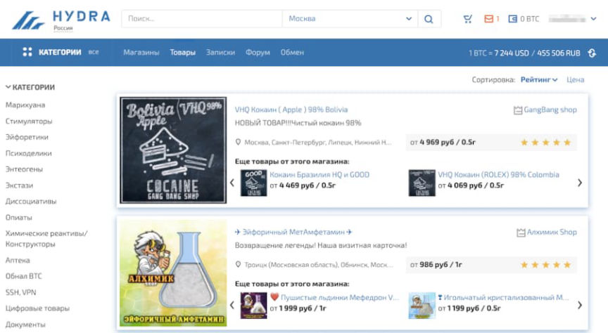
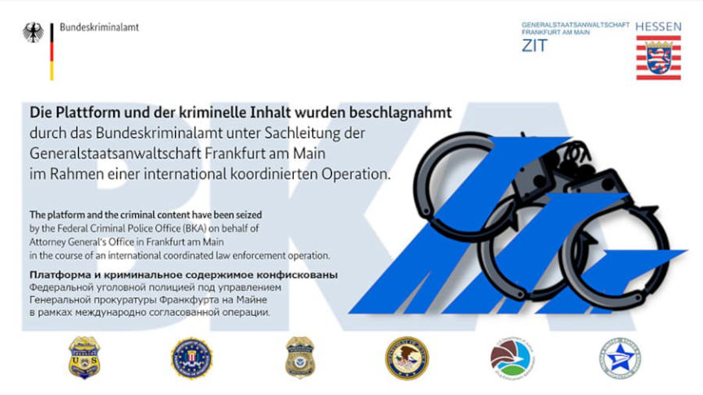
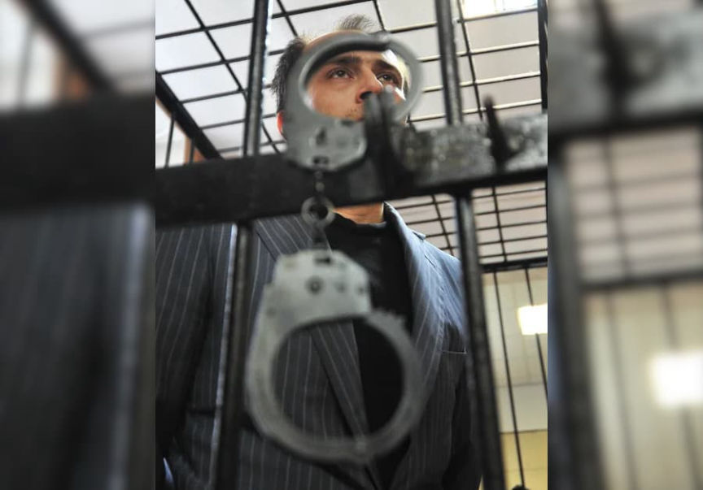
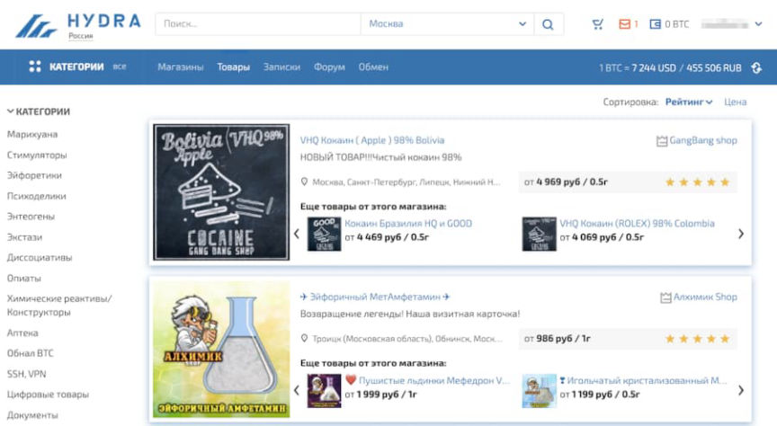
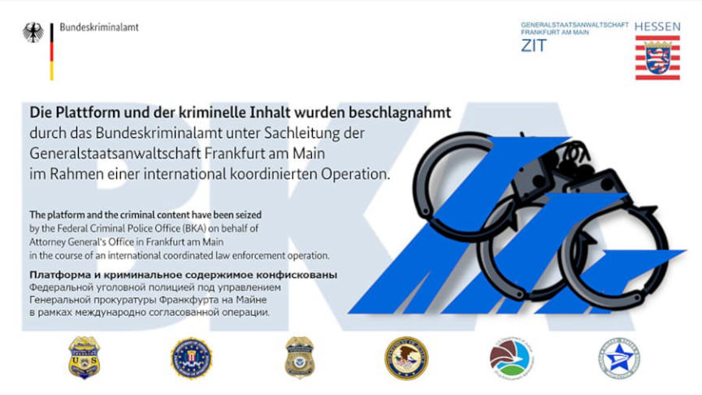
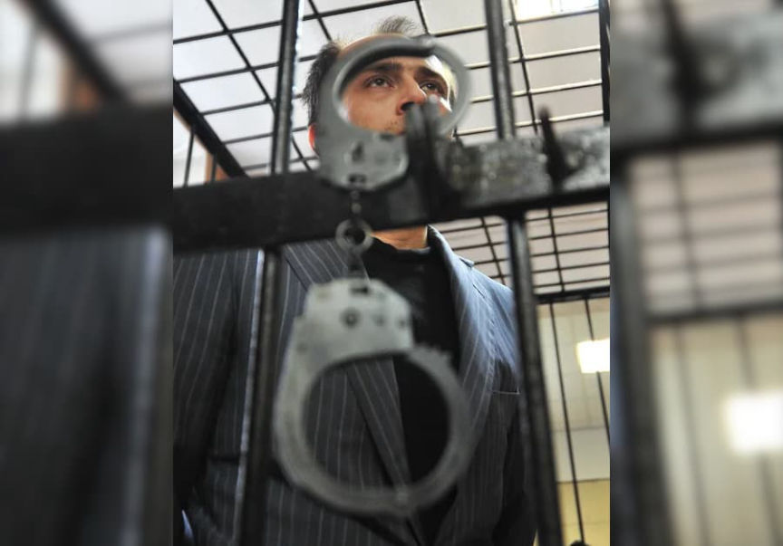

Hydra: Police Still Need the Password to a Seized BTC Wallet
~4 min read | Published on 2022-05-31, tagged Cryptocurrency, Darkweb-Market, Seized using 859 words.
The owner of a cryptocurrency wallet associated with Hydra Market refuses to provide police with the password, preventing investigators from establishing the wallet’s value.
According to Mash, a popular Telegram channel for news-related content, a court ordered the seizure of a cryptocurrency wallet owned by the alleged “co-founder” of Hydra Market, Dmitry Pavlov. Pavlov will not provide the police with the password needed to access the wallet’s contents.<h2 id="the-alleged-co-founder">The Alleged Co-Founder </h2>
Pavlov’s alleged role in the administration of Hydra remains undetermined. The United States Department of Justice indicted Pavlov in April 2022 for conspiracy to distribute narcotics and conspiracy to launder money “in connection with his operation and administration of the servers used to run Hydra.”
Statements from U.S. authorities have indicated that Pavlov provided support to the market’s administrators by hosting the servers used by the marketplace:
“Starting in or about November 2015, Pavlov is alleged to have operated a company, Promservice Ltd., also known as All Wheel Drive and 4x4host.ru, that administered Hydra’s servers (Promservice). During that time, Pavlov, through his company Promservice, administered Hydra’s servers, which allowed the market to operate as a platform used by thousands of drug dealers and other unlawful vendors to distribute large quantities of illegal drugs and other illicit goods and services to thousands of buyers, and to launder billions of dollars derived from these unlawful transactions.”
“As an active administrator in hosting Hydra’s servers, Pavlov allegedly conspired with the other operators of Hydra to further the site’s success by providing the critical infrastructure that allowed Hydra to operate and thrive in a competitive darknet market environment. In doing so, Pavlov is alleged to have facilitated Hydra’s activities and allowed Hydra to reap commissions worth millions of dollars generated from the illicit sales conducted through the site.”
News reports refer to Pavlov as the co-administrator of Hydra Market despite the U.S. government’s reports accusing Pavlov of being assistant [em]to the[/em] co-administrator.<h2 id="hundreds-of-millions-of-dollars-in-bitcoin">Hundreds of Millions of Dollars in Bitcoin </h2>
Per the report from Mash, investigators believe the wallet contains “hundreds of millions of dollars in bitcoins.”
“Taking into account the turnover of the darknet and the percentage, which the stores paid to the administration, the wallet may be quite rich. The exact amount cannot be established yet - Pavlov refuses to give access.”

At least 5.2 billion dollars worth of cryptocurrency has passed through Hydra’s wallets since 2016.<h2 id="seized-servers">Seized Servers </h2>
The investigation into Pavlov is likely related to the seizure of servers used by Hydra Market in Germany. In April 2022, Germany’s Federal Criminal Police Office (BKA) seized servers allegedly used by Hydra Market. They also confiscated Bitcoins worth $25,186,840 (23 million euros). According to the announcement, the seized Bitcoins are “attributed” to the market.

German law enforcement announced that Hydra’s “previously unknown operators and administrators” are under investigation for operating a criminal platform on the internet, enabling the trade of illegal narcotics, and money laundering.
However, at the time, a spokesperson for the Central Office for Combating Internet Crime (ZIT) of the Frankfurt Public Prosecutor’s Office said that investigators had not yet identified any suspects in the case.<h2 id="us-sanctions">U.S. Sanctions </h2>
After the BKA’s server seizure, the U.S. Department of the Treasury’s Office of Foreign Assets Control (OFAC) pointlessly sanctioned Hydra Market.
“The global threat of cybercrime and ransomware that originates in Russia, and the ability of criminal leaders to operate there with impunity, is deeply concerning to the United States,” said Secretary of the Treasury Janet L. Yellen. “Our actions send a message today to criminals that you cannot hide on the darknet or their forums, and you cannot hide in Russia or anywhere else in the world. In coordination with allies and partners, like Germany and Estonia, we will continue to disrupt these networks.”
Government officials and Twitter users called for endless sanctions against Russia around the time the Treasury sanctioned Hydra, which could offer a plausible explanation for the sanction’s purpose.
At the same time, the Department of Justice indicted Pavlov for his role as “an active administrator in hosting Hydra’s servers.” If he is interacting with Russian investigators in some way, Pavlov likely resides in Russia. As long as he stays in Russia, he will not need to worry about spending time in a U.S. prison.
The U.S. only manages to ensnare Russians after they cross a border into a state that functions as a U.S. proxy. In those cases, the U.S. issues an international arrest warrant or orders that another country’s law enforcement agencies arrest the victim. Since the U.S. announced Pavlov’s indictment without having him in their possession, I suspect they do not expect to prosecute him on U.S. soil.<h2 id="chronopay">Chronopay </h2>
On March 10, Russian law enforcement arrested the founder of the payment service company Chronopay, Pavel Vrublevsky. Vrublevsky and three co-conspirators allegedly defrauded hundreds of thousands of people through forms of fraud.

Vrublevsky allegedly created the shitcoin Inferno Pay. According to a report from the media outlet Kommersant, Vrublevsky allegedly “provided cash-out services” to Hydra. His fraud charges are unrelated to the alleged connection to Hydra. I have not been able to find any updates about Vrublevsky’s case.
Pavlov apparently gave police the wallet but not the password.
According to Mash, a popular Telegram channel for news-related content, a court ordered the seizure of a cryptocurrency wallet owned by the alleged “co-founder” of Hydra Market, Dmitry Pavlov. Pavlov will not provide the police with the password needed to access the wallet’s contents.<h2 id="the-alleged-co-founder">The Alleged Co-Founder </h2>
Pavlov’s alleged role in the administration of Hydra remains undetermined. The United States Department of Justice indicted Pavlov in April 2022 for conspiracy to distribute narcotics and conspiracy to launder money “in connection with his operation and administration of the servers used to run Hydra.”
Statements from U.S. authorities have indicated that Pavlov provided support to the market’s administrators by hosting the servers used by the marketplace:
“Starting in or about November 2015, Pavlov is alleged to have operated a company, Promservice Ltd., also known as All Wheel Drive and 4x4host.ru, that administered Hydra’s servers (Promservice). During that time, Pavlov, through his company Promservice, administered Hydra’s servers, which allowed the market to operate as a platform used by thousands of drug dealers and other unlawful vendors to distribute large quantities of illegal drugs and other illicit goods and services to thousands of buyers, and to launder billions of dollars derived from these unlawful transactions.”
“As an active administrator in hosting Hydra’s servers, Pavlov allegedly conspired with the other operators of Hydra to further the site’s success by providing the critical infrastructure that allowed Hydra to operate and thrive in a competitive darknet market environment. In doing so, Pavlov is alleged to have facilitated Hydra’s activities and allowed Hydra to reap commissions worth millions of dollars generated from the illicit sales conducted through the site.”
News reports refer to Pavlov as the co-administrator of Hydra Market despite the U.S. government’s reports accusing Pavlov of being assistant [em]to the[/em] co-administrator.<h2 id="hundreds-of-millions-of-dollars-in-bitcoin">Hundreds of Millions of Dollars in Bitcoin </h2>
Per the report from Mash, investigators believe the wallet contains “hundreds of millions of dollars in bitcoins.”
“Taking into account the turnover of the darknet and the percentage, which the stores paid to the administration, the wallet may be quite rich. The exact amount cannot be established yet - Pavlov refuses to give access.”

Hydra.
At least 5.2 billion dollars worth of cryptocurrency has passed through Hydra’s wallets since 2016.<h2 id="seized-servers">Seized Servers </h2>
The investigation into Pavlov is likely related to the seizure of servers used by Hydra Market in Germany. In April 2022, Germany’s Federal Criminal Police Office (BKA) seized servers allegedly used by Hydra Market. They also confiscated Bitcoins worth $25,186,840 (23 million euros). According to the announcement, the seized Bitcoins are “attributed” to the market.

In April 2022, the BKA seized servers allegedly used by Hydra Market.
German law enforcement announced that Hydra’s “previously unknown operators and administrators” are under investigation for operating a criminal platform on the internet, enabling the trade of illegal narcotics, and money laundering.
However, at the time, a spokesperson for the Central Office for Combating Internet Crime (ZIT) of the Frankfurt Public Prosecutor’s Office said that investigators had not yet identified any suspects in the case.<h2 id="us-sanctions">U.S. Sanctions </h2>
After the BKA’s server seizure, the U.S. Department of the Treasury’s Office of Foreign Assets Control (OFAC) pointlessly sanctioned Hydra Market.
“The global threat of cybercrime and ransomware that originates in Russia, and the ability of criminal leaders to operate there with impunity, is deeply concerning to the United States,” said Secretary of the Treasury Janet L. Yellen. “Our actions send a message today to criminals that you cannot hide on the darknet or their forums, and you cannot hide in Russia or anywhere else in the world. In coordination with allies and partners, like Germany and Estonia, we will continue to disrupt these networks.”
Government officials and Twitter users called for endless sanctions against Russia around the time the Treasury sanctioned Hydra, which could offer a plausible explanation for the sanction’s purpose.
At the same time, the Department of Justice indicted Pavlov for his role as “an active administrator in hosting Hydra’s servers.” If he is interacting with Russian investigators in some way, Pavlov likely resides in Russia. As long as he stays in Russia, he will not need to worry about spending time in a U.S. prison.
The U.S. only manages to ensnare Russians after they cross a border into a state that functions as a U.S. proxy. In those cases, the U.S. issues an international arrest warrant or orders that another country’s law enforcement agencies arrest the victim. Since the U.S. announced Pavlov’s indictment without having him in their possession, I suspect they do not expect to prosecute him on U.S. soil.<h2 id="chronopay">Chronopay </h2>
On March 10, Russian law enforcement arrested the founder of the payment service company Chronopay, Pavel Vrublevsky. Vrublevsky and three co-conspirators allegedly defrauded hundreds of thousands of people through forms of fraud.

Pavel Vrublevsky
Vrublevsky allegedly created the shitcoin Inferno Pay. According to a report from the media outlet Kommersant, Vrublevsky allegedly “provided cash-out services” to Hydra. His fraud charges are unrelated to the alleged connection to Hydra. I have not been able to find any updates about Vrublevsky’s case.